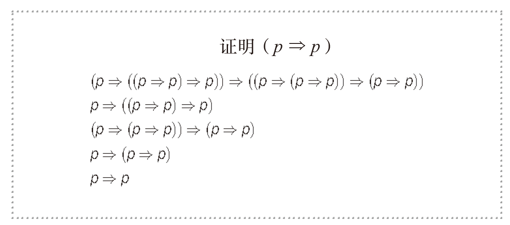
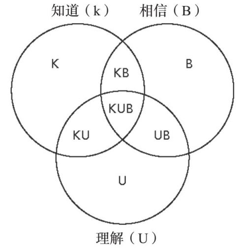
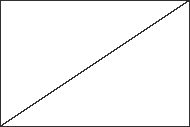
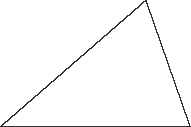
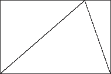
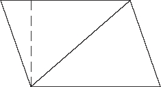
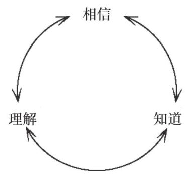
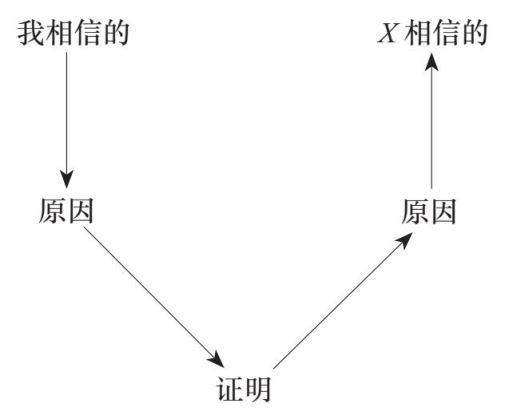

我们在本书前半部分说过，数学的目的是变困难为简单。而我们现在已经看到，范畴论是关于数学的数学。因此，范畴论的目的是变困难的数学为简单的数学。
在本书的后半部分，我们讨论了范畴论达成这一目的的不同方式。现在，我想以一个范畴论学者的方式来总结范畴论：适合范畴论的那只水晶鞋具体指的是什么？也就是说，与其讨论范畴论是什么，不如讨论它扮演了怎样的角色。
人们通常认为数学是非黑即白的。这种说法是不对的——即便一个数学陈述是对的，它也可能是好的或是坏的，有启发性的或是无启发性的，有用的或是没用的，等等。
然而，这个非黑即白的说法也不是完全没有道理。数学的一条重要特性就是，因为它是纯粹由逻辑构建起来的，所以当某个陈述在逻辑上是正确的时候，所有的数学家都会马上同意。这与其他的研究领域很不相同，在那些领域里，人们可以就相互对立的理论永远地争论下去。就像哲学家迈克尔·达米特在《数学哲学》（The Philosophy of Mathematics）里说的：
数学一直在稳步前进着，而哲学仍在它从一开始就遇到的问题那里困惑不解，徘徊不前。
数学事实比其他种类的事实有一种更高的地位。我们此前已经说过，科学家十分尊崇所谓的科学的方法、实验的方法，以及基于证据的知识，也就是那些从已有的确凿证据中推导出来并且可以反复验证的事实。但数学与之完全不同。数学不使用证据，因为证据在逻辑上并不是滴水不漏的。证据是科学的基础，但它不足以为我们带来数学的真理。这就是为什么数学既可以被视为科学的一个分支，也可能被认为与其他的科学体系有所不同。
数学使用“逻辑的方法”，事实仅由不掺杂主观情感的、清晰的逻辑推导出来。数学真理被一致认同的原因在于证明过程：所有的结论都是经过严格论证的，一旦某个结论被证明了，它就不能被反驳。如果你在证明过程中发现了一个错误，那就意味着这个结论从一开始就没有被证明。感谢“证明”这个概念，它让我们掌握了一种完全不可驳斥的方法，用以区分在数学中什么是真的，什么不是真的。我们怎样才能知道某事为真呢？我们证明它。
……我们真的是这样做的吗？
形式数学证明的好处在于，它剔除了论点中的直觉部分。你不需要猜测某人试图说的是什么，也不需要费力解读他们的话，倾听他们语调的变化，或是仔细观察他们脸上的表情，并回应他们的身体语言。你不需要考虑你与他们的关系的性质、他们当时所承受的压力、他们可能喝醉了的事实，或是他们过去的经历对他们现在行为方式的可能影响。你不需要想象某事看起来是什么样子的，你不需要想象八维空间，或是200万个苹果堆成一堆会是什么样子，或是身处北极会有怎样的感觉。所有这些会引发种种问题的细节都被剔除了。
而形式数学证明的问题恰恰就是所有这些细节的缺失。这些会引发问题的细节并不是无用的，它们的作用能够体现在另外一些方面。它们有助于我们从个人的角度理解事物。你也许认为数学不应该讨论个人观点，但最终，所有的理解都是个人观点。这就是理解和知道的差别。形式数学证明也许是严丝合缝的、清晰无误的，但它们很难被理解。
想象一下被一步一步引领着穿过一个黑暗的森林，而你对于你所走过的路线完全没有概念。如果你在这条路的起点被引领者丢下了，你就会找不到出去的路。然而，如果有人能一步一步地带着你走，你就可以穿过黑暗，走到森林的另一边。
数学家和学数学的学生都有过在阅读一个证明时突然意识到“呃，我明白每一步是怎么由上一步推导出来的，但我不明白它总体上讲的是什么”的经历。我们能看懂一个正确的证明，并且完全确信证明中的每一步都是遵循逻辑规则的，但我们可能仍然无法理解整个证明。这里有一个关于一个看似无关紧要的事实的纯粹的形式证明：任何命题都蕴涵（imply）它自身。注意这里的“imply”指的是逻辑蕴涵。在数学逻辑里，蕴涵一词的用法和其在日常生活中的用法不同——前者要严格很多。“A蕴涵B”指的是如果A成立，那么B必然成立，毫无疑问。而在日常生活中，我们会在说“你是在暗示（imply）我是傻瓜吗”这样的句子时使用这个词，在这里，这个词更多是指暗示或含沙射影的意思，而非指某事是确凿无疑的事实。
回到我们刚刚提到的任何命题都蕴涵它自身这句话。这句话的意思有点儿像事物与它自身等价，因此其最显而易见的表达式就是：
x=x
因此，这个表达式对于逻辑上的蕴涵想必也是适用的。比如：
• 如果我是女孩，那么我就是女孩。
• 如果天在下雨，那么天就在下雨。
• 如果1+1=2，那么1+1就等于2。
然而，这个陈述的严格证明复杂得近乎荒谬。在如下所示的表达式中，箭头符号指的是“蕴涵”。以下是关于任何命题p都蕴涵它自身的完全严格证明，其中我们用到了形式逻辑的公理。

我承认，我本人认为这个证明非常令人激动且让人满意，不过就连数学家也未必同意我的看法，因此如果你们觉得整个证明不知所云，我深表理解。我把它写在这里，目的是让你了解就连那些最基本的逻辑命题也可能需要看上去如此复杂的证明过程这一事实。非数学家往往认为他们永远不会理解数学家做的事，但很多时候数学家也不能彼此理解。这个证明真的说服了数学家所有的命题都蕴涵它自身吗？不，当然没有。
那么，如果证明本身仍然不能说服他们相信这是真理，什么能呢？
还有一样东西能说服数学家相信它是真的。我认为这样东西可以被称为启发。
在此，我想先来讨论一下真理的三个方面或三种形式：
1. 相信
2. 理解
3. 知道
这有点儿像圣保罗大教堂的三个拱顶。所谓“知道”，类似于那个能从教堂外直接看到的拱顶；所谓“相信”，类似于那个我们从教堂内部看到的拱顶；而所谓“理解”，就类似于那个把内外两个拱顶有机结合在一起的拱顶。
真理的这三个方面或三种形式之间的相互作用十分复杂，我们可以用一个文氏图来表示它们：

我将每个重叠的部分进行了标注，所以我们有：
KUB：我们知道、相信并且理解的事物。真理中正确性最有保障的部分。
KB：我们知道并且相信，但并不理解的事物。这包括必定为真的科学事实，哪怕我们不能理解它们，也不影响它们的真实性。比如，我并不真的知道重力是如何起作用的，但我知道并且相信它一直在起作用。我知道并且相信地球是圆的，但我并不理解为什么地球是圆的。
B：我们相信，但并不理解，也不确切知道的事物。这些事物是我们的公理，是其他事物的源头——是我们无法用其他事物来证明的事物。比如，对我来说，爱和生命的宝贵就是这样的事物。我相信爱是一切事物中最重要的那个。我解释不出来为什么，我也不能说我知道它肯定是真的，因为我甚至并不确切知道爱的真正含义。
我们还有其他的部分，但这些部分理解起来就比较复杂了：
K：我们知道，但并不理解和相信的事物。这可能吗？我想，如果你经历过突如其来的悲剧或心碎事件，你也许能理解这是一种怎样的感受。在你被告知某个噩耗后那段情感麻木的日子里，你在理性上知道这件事已经发生了，但你就是没办法相信它发生了，你无法接受它是真的，并且你一点儿也不理解它为什么发生。也许极端的正面情绪也会给人这种感觉。比如，如果我中了彩票头奖，我很可能在一段时间内知道它发生了，但并不理解或者相信它发生了。中了“爱之彩票”也是如此，你可能无法相信你会有这样的好运。
KU：我们知道和理解，但并不相信的事物。也许这就是悲伤的下一个阶段，那时我们已经明白悲剧真的发生了，但我们还是不能相信这件事，你会试图否认已经发生的事实。除此特殊情况，通常而言，知道并理解某事总是会让我们从心底相信它是真的。
最后，下面这些部分我怀疑并不真正存在：
U：我们理解，但并不知道和相信的事物。
UB：我们理解且相信，但并不知道的事物。
我认为，理解某事却并不知道它这种情况是不可能的（或者不合理的）。在这个意义上，理解就与真理的另外两种形式有所区别，因为另外两种形式是可以独立存在的。在上面这张图中，真理只沿着一个方向流动——从理解流向所有其他的部分。
当然，这一切都取决于我们如何定义这些概念。但请你先试着想一下你所相信的事物。以下是一些你可能相信的事物：
• 1+1=2
• 地球是圆的。
• 明早太阳会升起来。
• 北极很冷。
• 我的名字是郑乐隽。
你为什么相信这些事情？也许你觉得你理解为什么1+1=2，除了那些它不成立的情境，就像我们之前讨论过的那些例子。如果我们探讨的是自然数或整数的话，1+1=2成立的原因主要在于，这就是数字2的定义。但如果我们探讨的是一圈有2个小时的钟的算数问题，也就是整数模2的话，我们就有1+1=0了。
但地球为什么是圆的呢？明早太阳为什么会升起来呢？北极为什么冷呢？这些是我们大部分人都知道但并不真正理解的事实。我认为我们所掌握的很多科学知识都是如此——我们相信它们是真的，是因为我们信任的人告诉了我们这些。我们出于信任，或是出于对权威的服从接受了它们。
我的名字为什么是郑乐隽（如果事实的确如此的话）？这件事解释起来比较容易。假设这的确是我的名字，那么我叫这个名字是因为我爸妈为我选择了这个名字。但你是否会选择相信这件事呢？你会仅仅因为本书封面所写的作者姓名就相信这件事吗？还是你需要查证我的出生证明才会相信？（我希望你不会这么做。）这些问题更复杂一些。你也许会在并不确切知道一件事是否为真的情况下就相信了这件事。
理解是知道和相信之间的桥梁。我们最终的目的是让越来越多的事物被纳入图表的中心部分，也就是知道、理解和相信三者重叠的部分。
以下是一个关于知道与理解的区别的数学例子。假设你在试图解这个方程：
x+3=5
也许你记得你可以“把3挪到等式的另一边，并变加为减”。于是下一步就是：
x=5 - 3
于是我们得到x等于2。
然而，知道我们可以用这种方式解方程不等于我们理解了为什么这种方法好用。为什么我们可以这样解方程呢？原因是等式的左右两边是相等的，因此我们可以对等式的两边进行同样的运算，而它们仍然会是相等的。现在，如果我们想要等式的一边只有x，也就是说，我们想去掉等式左边的3的话，我们应该怎么做呢？我们可以减去3。但等式的左边减去3，意味着等式的右边也要减去3，这样才能保持等式继续成立。因此我们实际上做的就是：
x+3=5
x+3 - 3=5 - 3
x=2
理解某种方法的工作原理而非仅仅知道可以使用这种方法，能让我们将业已习得的知识迁移到其他情境。
记得我们在第4章讲过的奇怪的“塞钱入你袋”的例子吗？你口袋里有一张10英镑的纸币。有人偷了你的钱，而之后又有人把一张10英镑的钞票放进了你的口袋。由于对这一切毫不知情，你相信你的口袋里始终有一张10英镑的纸币。
但你真的知道你有吗？也许你检查了一下口袋，发现10英镑的钞票还在那里。这时，你不仅相信，也知道了你的口袋里有一张10英镑的钞票。
但是，直到有人告诉你整件事情的来龙去脉，你才能真正理解为什么你口袋里有一张10英镑的钞票。
小鸡为什么要过马路？
理解的核心是“为什么”。为什么某件事是真的？从人性的角度而言，“因为我们已经证明过它了”并不是一个令人满意的回答。为什么玻璃杯碎了？你可以回答“因为我把它摔在地上了”，也可以回答“因为玻璃分子的分子键断裂了”。我们都在机场候机大厅听到过“对飞机需要晚点起飞我们表示抱歉。这是因为到港航班的延迟……”当然，还有那个经典笑话：小鸡为什么要过马路？有时候，问“为什么”就像是在问某个故事的寓意是什么一样。
让我们试着问一些数学方面的为什么：
• 为什么三角形的面积等于底乘以高的一半？
• 为什么负的负一等于一？
• 为什么零乘以任何数都等于零？
• 为什么圆的周长与直径的比值是固定的（等于π）?
• 为什么π的小数部分是无限的？
现在，让我们试着回答这些问题。对于直角三角形，我们很容易理解它的面积应该如何计算，因为它的面积显然是长方形面积的一半：

但对于一个更不规则的三角形，如下所示：

那我们就需要更聪明地将它填到一个长方形里，就像这样：

然后我们可以尝试着弄明白为什么这个长方形中除所求三角形外的两个部分可以被拼成一个和所求三角形一样的形状，如此我们就证明了该三角形的面积也是长方形面积的一半：

这很有说服力，但这并不是一个证明。
对于第二个问题，我们可以用关于数字的公理来证明它，如下所示。
x的加法逆元被定义为-x，也就是说：
-x+x=0
并且符合这个特性的数字总是只有一个。现在我们需要证明1是-1的加法逆元。也就是说：
1 +（-1）=0
这个等式是成立的，因为-1是1的加法逆元。
这个证明过程在数学上是正确的，但并不是很有说服力。如果我用“在某数前面加上负号就相当于将其转向反方向，而如果把它反转两次，它就又回到了原来的方向”这样的话来论证，你会觉得更有说服力吗？这个论证完全不数学，但是可能会更有说服力。也许我们应该换一种论证方式：当我们有a+b=0时，这个等式就告诉了我们a和b是彼此的加法逆元，也就是说：
a=- b，且 b=- a
我们知道-1是1的加法逆元，因此我们可以使a=-1，使b=1，于是我们就得到了a+b=0。因此，我们可以下结论说b=-a，在此处就表示：
1=-（-1）
这和之前的证明在本质上是一样的，只是写得没有那么简洁优雅。那么，你会认为这个论证更有说服力吗？
关于0乘以任何数都等于0的问题，我们同样有一个非常数学，的但比起前一个陈述的论证看起来更没有说服力的证明，它源自这样的公理：
假设x是任意实数，则：
0x+0x=（0+0）x …… 遵从分配律
=0x …… 遵从0的定义
等式两边同时减去0x，我们就得到了0x=0。
我们在前文曾经提到，“0不能做除数”这句话的含义其实是“根据公理，0没有乘法逆元”。但根据所有这些基于实数的公理所进行的证明，并不是在试图证明为什么这些事情成立。这些证明只是为了检验我们感觉应该成立的事情根据我们所选择的公理的确成立。它并没有给出关于任何事的解释。
关于圆的问题我们可以用微积分来证明，但你也可以这样说服你自己：圆的周长和直径都是长度，当你把一个形状按比例进行缩放的时候，它的所有长度之间的比值是不变的。
至于π的小数部分是无限的这个问题，你也许还记得这是因为π是无理数。但π为什么是无理数呢？我还没有找到关于这个问题的足够有说服力的解释，除了你可以这样理解：因为圆的边是弯曲的，而圆的直径是直的，如果它们的比是一个有理数的话，就会显得有些过分巧合了。
其实有些有理数的小数部分也是无限的，比如1/9也就是0.1111111…，但与无理数不同的是，这类有理数的小数部分是无限循环的，而如π或之类的无理数，它们的小数部分是无限不循环的。
你可以一直这样问下去，因为总会有一个新的层面的“为什么”可以问。每个孩子都知道“为什么”其实是一系列数量无穷的可以用来烦扰大人的问题。
举出上述这些例子的目的是想说明，如果你想知道为什么某个数学事实成立，那么数学上的证明通常不能真正说服你它为什么成立，而只能说服你它确实是成立的这个事实。下一节我们将讨论二者的主要区别。
证明具有社会学层面的意义，而启发则更多地针对个人发挥作用。
证明是用来说服整个社会的，而启发是用来说服我们的。
在某种意义上，数学就像一种情绪，无法用语言精准描述——它发生在个体的内部。我们将这些数学知识书写下来，仅仅是为了与他人交流我们的所思所想，并希望他们也能够在他们自己的头脑里再次体验这些情绪。
当我研究数学的时候，我常常感到我需要研究两次——第一次在我自己的头脑里，第二次将它转换或者翻译成一种我可以用来与所有其他人进行交流的形式。这就像你想跟某人说些事情，这些事在你自己的头脑中显得无比清晰，但是你发现你没办法很好地用语言表达它。这种转换或翻译绝非无足轻重。为什么我们要翻译呢？为什么不就坚持那种足够有启发性、说服力的陈述呢？
1. 启发很难界定。
2. 不同的人对于什么事物富有启发性有不同的看法。
因此，启发本身并不是一个很好的数学归类工具。毕竟，数学研究的目的并不只是说服我们自己这些事情成立，我们的最终目的是增进我们对周围世界的认识，而不仅仅是堆积只能存在于我们自己头脑里的那些知识。
接下来，我希望通过这三种形式的真理之间的转换关系来描述数学活动。

在数学里，“知道”某事来自对某事的证明。通过证明，我们意识到某事为真。一般而言，数学研究的终极目标被认为是证明定理，也就是说推动未经证明的事物进入“已证明领域”。但我认为，数学研究的一个更深入的目的是推动未被相信的事物进入“已相信领域”——被越多的数学家相信越好。那么，我们如何做到这一点呢？如果我已经证明了某事成立，我怎样才能相信它成立呢？这就好像除了根据证明过程进行一步一步的推导，我还能找到其他对我来说足够有启发性的理由来相信它。而一旦我相信这件事，我又该如何说服其他人相信它呢？我会给他们看我的证明过程。
我们需要用证明让我相信的事物变成其他人也相信的事物：

因此这个过程是：
• 从一个我相信并希望能与X交流它的事实入手。
• 我找到一个它得以成立的原因。
• 我把这个原因转变为一个严格的证明。
• 我把证明拿给X看。
• X看了证明，并把这个证明转换成一个有说服力的原因。
• X将这个真理纳入其“已相信真理”的范畴。
其实，这个过程更像一个真理之谷，而非真理之圆；我不推荐直接从（你的）相信飞到（其他人的）相信。我们都见过试图通过大喊大叫来直接传递真理的人，而显然这种做法不怎么奏效。
那么，如果直接传递真理是不可行的，我为什么不能直接把真理成立的原因给X看呢？这种做法省略了这个过程中也许是最难的两部分：把一个原因变成一个证明，再把一个证明变成一个原因。
答案是：原因比证明更难表达。
我认为，证明的核心特点不是它的不可驳斥性，而是它在转换过程中的稳定性。证明是把我的论点向X表达的最佳媒介，它既不会造成模棱两可，也不会引起误解或混淆。证明是人与人沟通数学知识的桥梁，只不过位于桥梁两边的人都需要先完成翻译的工作。
当我阅读其他人的数学研究时，我总是希望作者会附上一个原因而不只是写出证明过程。这种做法的好处是巨大的。不幸的是，绝大部分的数学知识都是以从未付出任何努力去启发读者的方式被教授的，甚至更糟，有时候你可能连一个解释都得不到。而即便附带了解释，也并非每一种解释都对读者有所启发。比如，之前我们提到过，当你开始学习解这样的方程时：
x+2=5
也许有人曾告诉你，就像有人曾告诉我的一样：“你可以把2移到等式的另一边，然后把加号变成减号。”于是你就得到：
x=5 - 2
所以：
x=3
这个过程是正确的，但并不是很有启发性。为什么我们可以用将某一项从等式的一边移到另一边并改变运算符号的方式让等式继续成立呢？从表面上看，一种解释的方法是，在移动加号的过程中，当加号穿过等号时，它的竖线被等号卡住了，所以+就变成了-。这显然是一种很荒唐的解释，因为它在将减号项移动到等式另一边转变为加号项时就不成立了。这是一种启发性为零的解释。
据我所知，至少在英国和美国，很多人在儿童时期都很反感数学，这也许就是因为，在学校里，数学是作为一套他们应该相信的事实和必须遵循的法则被教授的。
你不应该问为什么，而且你错了就是错了，没有什么其他可解释的。相信和规则之间那个重要的过渡环节被忽略了，这个环节就是具有启发性的解释。一个经过充分解释的、富有启发性的方法会减少很多困惑、强迫性和恐惧。
但是否每个数学事实的背后都有一个具有启发性的解释呢？也许并不是，就像生活中不是每件事都有一个足够有说服力的解释一样。有些事情的发生是如此令人难以置信或者如此令人悲痛，对于这些事情，我们不可能给出任何一个能让人轻易接受的解释。
范畴论试图启发我们更好地理解数学。事实上，范畴论可以被视为一种阐释数学的普适性方法——它致力于解释、阐明，启发学习者达成真正的理解，这就是它的全部工作，它所扮演的角色，或者说，这就是只有它可以完美适配的水晶鞋。我并不是说范畴论能够解释数学里的所有问题，毕竟数学也不能解释世界上的所有问题。
对于小学生、中学生和大学生这个“国度”的公民来说，数学看起来就像一个有着严苛规则的专制国家。小学生和中学生会努力尝试着遵守规则，但仍然会时不时地被突然告知他们破坏了规则。他们并不是故意的——大多数算错数学题的学生并不是故意的，他们真的以为他们写的是正确答案。但之后他们会被告知他们破坏了规则，将要接受惩罚——被判为错误、扣除分数对他们来说就是一种惩罚。也许从没有人告诉过他们到底是哪里出了错，更确切地说，也许从没有人以一种能让他们理解的方式告诉他们是哪里出了错。结果是，他们不知道自己下一次又会在哪里打破规则，于是他们只能在对惩罚的恐惧中蹒跚前进。最终，他们只想逃到一个更加“民主”的地方去，一个很多不同的观点都可以成立的领域。
老话说，“知识就是力量”。但我认为，理解是更强大的力量。我们已经走过了知识只是一小拨人才能理解的神秘之书中的秘密的年代。我们已经离开了书籍稀缺、目不识丁者要受书籍拥有者支配的年代，那时，追求知识的学生必须追随着一个能将书读给他们听的人，一位“讲师”（lecturer）——这个词的本义指的就是读书者，而不是什么以绝对权威的姿态向听众布道的上位者。总之，我们早已远离了那个年代。
现在的我们正身处一个被信息包围的时代。虽然识字率仍有提升的空间，但大部分成年人都有阅读的能力，并且在很多国家，成年人都可以使用互联网。智能手机更是让我们中的许多人可以将互联网随身携带。知识不再是秘密，但理解仍然是秘密，至少在数学领域里仍是如此。各个学力水平的学生都只被教授了规则，而没有被告知原因。我们鼓励孩子们问为什么——但只鼓励到某个阶段，因为过了那个阶段，我们自己可能也不理解了。而由于我们自己无力提供解释，我们就压制他们寻求解释的诉求。我认为，与其恐惧于那种未知的黑暗，不如带领所有人来到黑暗边缘，然后说：“看！这是一个需要阐明的领域。”记得带上火种、火炬、蜡烛——你能想到的任何能带来光明的东西，然后在此打好地基，建造我们的大楼，医治疾病，发明很棒的新机器，以及做其他所有我们觉得人类应该做的事情。这一切的前提，只是一缕点亮黑暗的火光。